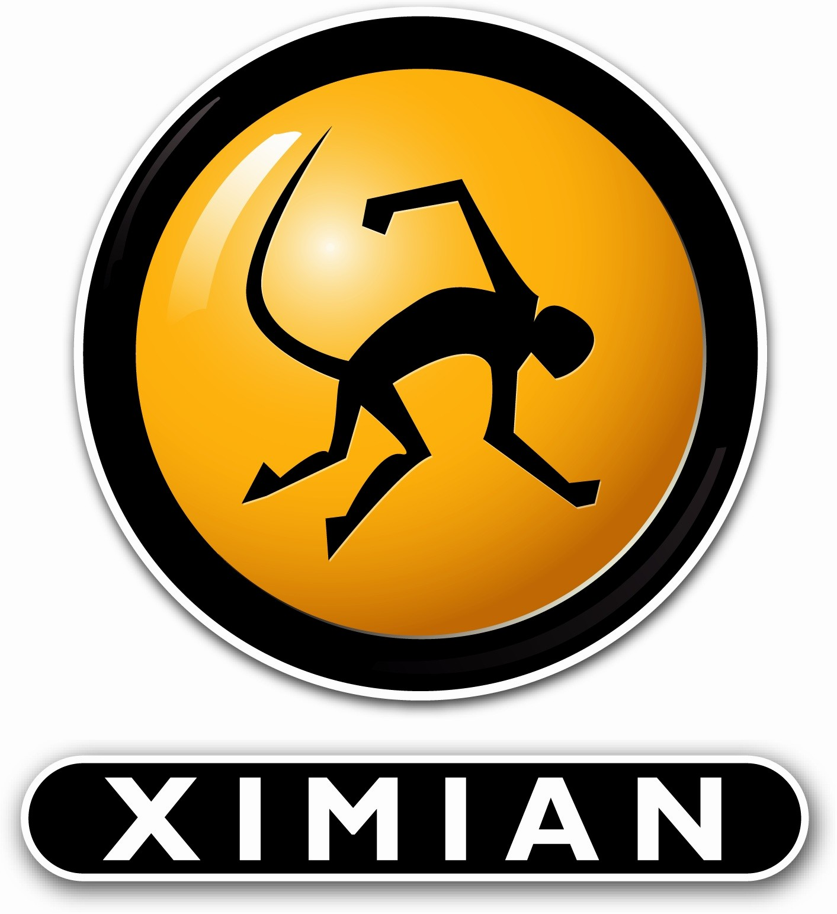
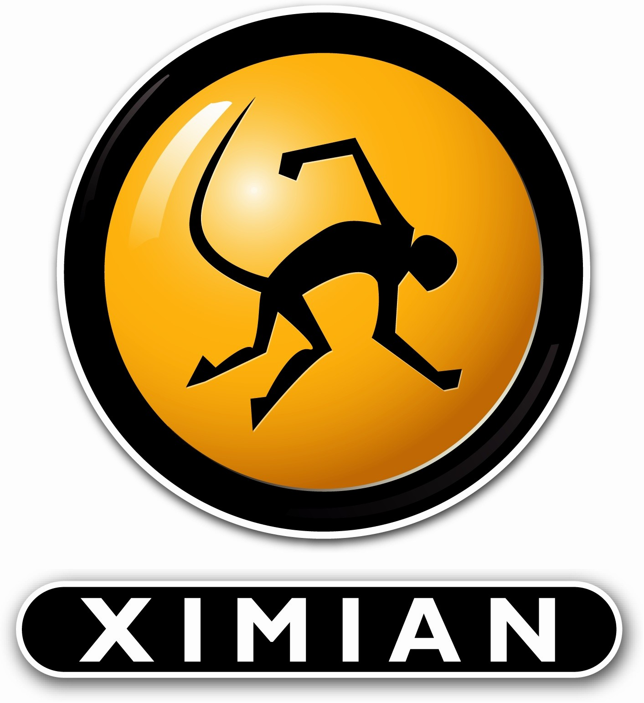

|
Introduction
The GNOME
project has built a complete free and easy-to-use desktop environment for
the user, as well as a powerful application framework for the software
developer. GNOME is part of the GNU project,
and is free software (some times referred to as open source software.)
The GNOME Foundation will work to further the goals of the GNOME project.
To achieve these goals, the Foundation will coordinate releases of GNOME
and determine which projects are part of GNOME. The Foundation will act
as an official voice for the GNOME project, providing a means of communication
with the press and with commercial and noncommercial organizations interested
in GNOME software. The foundation may produce educational materials and
documentation to help the public learn about GNOME software. In addition,
it may sponsor GNOME-related technical conferences, represent GNOME at
relevant conferences sponsored by others, help create technical standards
for the project and promote the use and development of GNOME software.
News:
-
Foundation By-laws Posted
(09/24/2002)
The GNOME Foundation by-laws have now been posted in PDF format.
-
Foundation Membership Renewal Exercise
(08/31/2002)
We are currently working to renew all old-style GNOME Foundation memberships under the new rules, available here. Affected members will receive mail today explaining what they need to do.
-
Friends of GNOME Fundraising Program
(07/17/2002)
The Friends of GNOME program has been launched to help raise funds for development, education and promotion for GNOME worldwide. The GNOME Summit is one event which is supported through the generosity of this program.
-
Results of 2001 election official
(12/07/2001)
The GNOME Foundation Membership & Elections Committee are pleased to announce the following members
as official Foundation board directors for the 2001/2002 term of office -
Jonathan Blandford, Miguel de Icaza, Nat Friedman, Jim Gettys, Jody Goldberg, Telsa Gwynne,
James Henstridge, George Lebl, Federico Mena-Quintero, Havoc Pennington and Daniel Veillard.
-
Preliminary results of 2001 election announced
(11/27/2001)
The preliminary results of the election have been posted.
Any challenges to these results must be received by December
4.
-
2001 Final list of election Candidates Announced (11/10/2001)
All 2001 election candidates have been compiled into a Final List
of Candidates. Voting begins on the 20th November and finishes on the 27th November.
-
2001 Election Schedule Announced (10/22/2001)
The 2001 elections for the GNOME Foundation Board of Directors
has been announced.
The announcement includes the timeline and details for who is eligible
for nomination and to vote.
-
Tim Ney Joins GNOME Foundation as Executive Director (08/22/2001)
The GNOME Foundation is pleased to announce that Tim Ney is joining the GNOME
Foundation as its executive director. For more information, see the
press release and the
announcement
sent by Havoc Pennington.
-
New Membership Policy Adopted (07/12/2001)
A new membership qualification
policy has been adopted and the GNOME Foundation Membership
has been re-opened to new members. If you would like to become
a member, please apply here.
-
Board Meeting Minutes (biweekly)
Minutes from the most recent board meeting can always be found in
the
foundation-announce mailing list archives.
|


 
